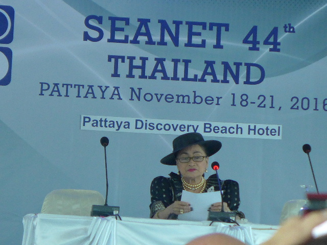
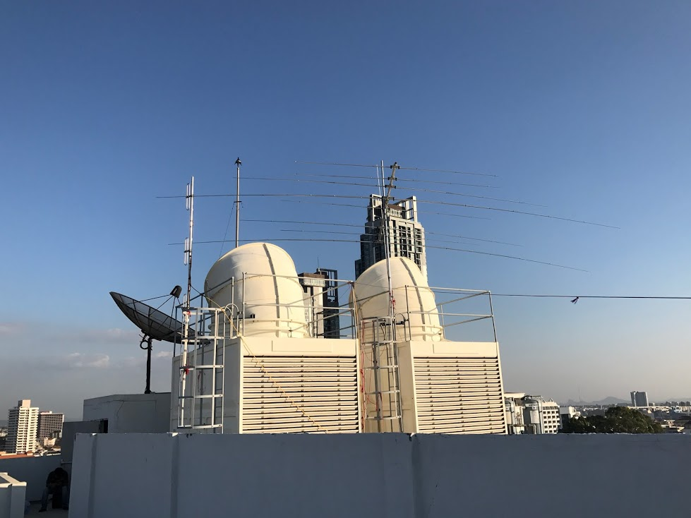

Flash ! DX
|
Who said 6M was a dead band ?
|
(注)
このReportをご覧になる方へ
[Back Issues Nov.2016]
TIME:UTC(JST-09:00)
Report from JA1RJU(PM95sq)
30.Nov.2016(15:00b)
Report from JA1RJU(PM95sq)
29.Nov.2016(15:00b)
Report from JA1RJU(PM95sq)
28.Nov.2016(15:00b)
Report from JA1RJU(PM95sq)
27.Nov.2016(15:00c)
ZL1HD 03:06 50.276+0.552 WSJT JT65a -09dB (QSO with VK4UH)
ZL1HD 03:08 50.276+0.552 WSJT JT65a -20dB (QSO with VK4UH)
ZL1HD 03:10 50.276+0.552 WSJT JT65a -20dB (QSO with VK4UH)
KG6JDX 05:23 50.110 SSB CQ DX RS59
Report from JA1RJU(PM95sq)
26.Nov.2016(15:00c)
VK5BC 04:53 50.276+0.229 WSJT JT65a -23dB (calling JA2)
VK5BC 04:55 50.276+0.229 WSJT JT65a -23dB (calling JA2)
Report from JA1RJU(PM95sq)
25.Nov.2016(15:00b)
Report from JA1RJU(PM95sq)
24.Nov.2016(15:00c)
|
◎東日本に寒波が襲った24日は各地で記録的な降雪による影響を与えた。関東地方でも深夜から降り出した雨が明け方6時頃から雪に変わり、東京では午前9時頃には気温が0.9度まで下がり、真冬並みの冷え込みとなった。降雪量は少なかったものの東京地方での11月の初雪は54年(1962年以来)ぶり。また11月に東京で積雪が記録されたのは観測史上初となった。
|
Report from JA1RJU(PM95sq)
23.Nov.2016(15:00b)
Report from JA1RJU(PM95sq)
22.Nov.2016(15:00b)
|
◎早朝05:59時に福島沖を震源とする”M7.4”の地震が発生。福島、宮城、岩手などを中心に東北地方から、茨城、千葉など関東の太平洋沿岸、伊豆諸島で弱い津波が確認された。宮城県下で1.4mを超える津波も確認されたが、幸い人的な被害は無く、午後には津波警報も解除された。
この朝、タイ国で開催されていた「SEANET」に参加して、帰国した直後の羽田空港(0540時着)での”地震”の出迎えには驚かされた。
|
Report from JA1RJU(PM95sq)
18-21.Nov.2016(15:00b)
◎44th SEANET Convention Pattaya Thailand (November 18-21, 2016)
Hosted by ”The Radio Amateur Society of Thailand HS44SEA”
◎恒例の「第44回・SEANET」コンベンションに11/17-11/22日のスケジュールで参加して来ました。今年の大会は、200７年の第35回以来9年ぶりのタイ国での開催で、バンコクから南に約160Km離れた海岸沿いにあるリゾート地のパタヤ（PATTAYA）で行われました。
開催直前の10月13日に、タイ国のピムポン国王が亡くなられ、国民は一ヶ月の“喪に服する”事になり、SEANETの参加者にも黒系の服装での参加要請があり、指示通りに暑い東南アジアには似つかない“黒色の装い”で出かけました。
大会のセミナーでは、タイ国から50MHzで初QRVして、多くのJAにDXCC NEWをプレゼントしてくれたHS1WR・故カムチャイ（Kamchai Chotikul）氏のXYLのHS1YL(Mrs Mayuree Chotikul)さんの「A brief history of SEANET in Thailand」と題しての講演があり、第2回のタイ国(Bangkok)でのSEANETの開催から、今回で10回目となるタイ国での開催の歴史が紹介されました。(De JA1RJU)
|


講演するHS1YL/JAからも23人が参加


SEANET記念局・HS44SEA /右は13階の屋上に建てられたANT
Report from JA1RJU(PM95sq)
18.Nov.2016(15:00c)
W5ADD 12:39 50.193 JT65a EME QSO -22dB JR2)
KG7H 15:09 50.193 JT65a EME QSO -24dB JR2)
Report from JA1RJU(PM95sq)
17.Nov.2016(15:00b)
Report from JA1RJU(PM95sq)
16.Nov.2016(15:00b)
Report from JA1RJU(PM95sq)
15.Nov.2016(15:00b)
W5ADD 10:40 50.193 JT65a EME QSO -25dB JR6)
UR0MC 18:12 50.201 JT65a EME QSO -25dB JR6)
Report from JA1RJU(PM95sq)
14.Nov.2016(15:00c)
S59A 16:28 50.191 JT65a EME QSO -22dB JR6)
PA3HP 16:51 50.191 JT65a EME QSO -25dB JR2)
PA3HP 17:13 50.191 JT65a EME QSO -24dB JR6)
Report from JA1RJU(PM95sq)
13.Nov.2016(15:00b)
Report from JA1RJU(PM95sq)
12.Nov.2016(15:00b)
Report from JA1RJU(PM95sq)
11.Nov.2016(15:00b)
Report from JA1RJU(PM95sq)
10.Nov.2016(15:00b)
Report from JA1RJU(PM95sq)
09.Nov.2016(15:00b)
|
◎ZLの入感があった昨日とは打って変わって6mのコンデションは終日落ち込んだまま。関東地方にも午後から”木枯らし一号”が吹き、東京都心でも風速15.5mの北からの冷たい強風が記録された。
|
Report from JA1RJU(PM95sq)
08.Nov.2016(15:00c)
ZL2WHO/B 05:47 50.024.0 CW Beacon
ZL3NW 05:48 50.110 CW into JA2
ZL1SG 05:49 50.115 CW
ZL3NW 05:57 50.099 CW CQ into JA5
ZL3NW 06:03 50.100 CW into JA5
ZL1SWW 06:04 50.110 CW
ZL1RQ 06:06 50.110 CW
ZL1WPS 06:09 50.110 SSB into JA6
Report from JA1RJU(PM95sq)
07.Nov.2016(15:00b)
Report from JA1RJU(PM95sq)
06.Nov.2016(15:00b)
Report from JA1RJU(PM95sq)
05.Nov.2016(15:00d)
VK4BLK 05:10 50.276+0.234 WSJT JT65a CQ -05dB
VK4BLK 05:14 50.276+0.231 WSJT JT65a -05dB (QSO with JR2)
VK4BLK 05:20 50.276-0.172 WSJT JT65a CQ -08dB
VK4BLK 05:22 50.276-0.172 WSJT JT65a -04dB (QSO with JK7)
VK4BLK 05:28 50.276-0.549 WSJT JT65a -08dB (QSO with JA5)
VK4BLK 06:16 50.276+0.490 WSJT JT65a CQ -14dB
VK4BLK 06:22 50.276+0.484 WSJT JT65a CQ -11dB
↓ ↓ ↓ ↓
VK4BLK 06:31 50.276+0.487 WSJT JT65a CQ -21dB
VK4BLK 06:38 50.276+0.479 WSJT JT65a CQ -17dB
VK4BLK 06:42 50.276+0.479 WSJT JT65a CQ -10dB
VK4BLK 06:44 50.276+0.482 WSJT JT65a -14dB (QSO with JM1)
Report from JA1RJU(PM95sq)
04.Nov.2016(15:00d)
ZL1RQ 03:37 50.110 CW CQ
ZL1RQ 03:38 50.110 CW @ RST599
ZL1RQ 03:42 50.110 SSB @ RS59
ZL1RQ 03:50 50.130 SSB QSY CQ CQ
ZL1NX 04:02 50.110 CW @ RST599
ZL1RQ 03:05 50.110 SSB CQ CQ
|
◎今季初めてZLの入感があった。正午過ぎに50.110MHzで突然ZL1RQのCQがRST 599で入感、東京西部では強力だったが地域性があったのか千葉、埼玉の一部ではピークでもRST559程度の信号だったとのこと。JAからはJA2-JA6エリアからもコールしていたが、ZL1RQが50.130MHzにQSYした後に、50.110MHzでCQを出していたZL1NXにはJA1から応答しただけ？。
同時間帯にJA5で入感していたWSJTのVK4はJA1では確認出来なかったのと、ZLからのBeaconも聞こえなかったので、ZL/VKとも広範囲ではなくスポット的にオープンしていたとものと思われる。
|
Report from JA1RJU(PM95sq)
03.Nov.2016(15:00c)
V73SIX/B 02:50- 50.011.5 CW Beacon
Report from JA1RJU(PM95sq)
02.Nov.2016(15:00b)
Report from JA1RJU(PM95sq)
01.Nov.2016(15:00c)
VK4WTN 04:08 50.276-0.258 WSJT JT65a CQ -09dB
VK4WTN 04:10 50.276-0.027 WSJT JT65a -04dB (QSO with JA1)